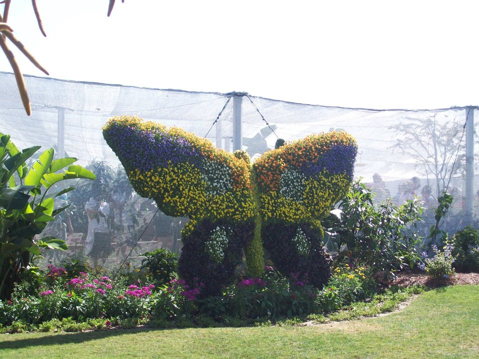

EDUCATION
Iowa State University: Ames, IA | Bachelor of Science, Technical Communication
Specialization: Programming & Web Design
Graduation: May 2018
SKILLS
Web Design: HTML, CSS, JavaScript, Bootstrap
Document Creation: Adobe Design Tools (InDesign, Photoshop, Illustrator), DITA XML (Oxygen),IXIASOFT DITA CMS (as a writer), Microsoft Office (Word, Outlook, PowerPoint, Excel), Google Drive Tools (Docs, Sheets, Slides)
WORK EXPERIENCE
- Technical Writing Intern
- Danfoss Power Solutions: Ames, IA (May 2017–December 2017)
- Created technical documentation (datasheets and manuals) using IXIASOFT DITA CMS, Adobe Illustrator, and Adobe Photoshop
- Edited existing datasheets and manuals
- Lead re-branding project for an acquired company by organizing the work and creating a majority of the documents
- Worked with engineers in multiple locations around the world
CUSTOMER SERVICE EXPERIENCE
- Electrical & Computer Engineering Student Services: Ames, IA (August 2016–May 2018)
- Organized student files and assisted with student advising needs
- Cyclone Aide: Ames, IA (January 2016–January 2017)
- Helped incoming freshmen students adjust to university
- KONE Customer Care Center: Moline, IL (June 2015–August 2015)
- Received broken elevator and escalator reports and entered them into corporate database
- Clyde’s Sports Club/West Side Market: Ames, IA (August 2014–May 2016)
- Managed the cash register and checkout process
Organizations
- Society of Technical Communication, Spring 2017–Present
- Chapter President (Spring 2017–Spring 2018)
- Sigma Lambda Gamma National Sorority Inc., Fall 2014–Present
- Vice President of Program Development (Fall 2017–Spring 2018)
- Vice President of Recruitment (Fall 2015–Spring 2016)
- Historian (Spring 2015)
- Ritual Chair (Spring 2015)

Picture by Breayona Reed